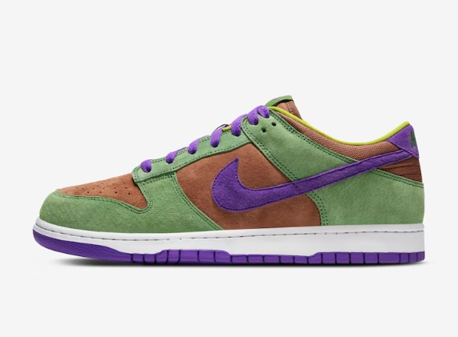
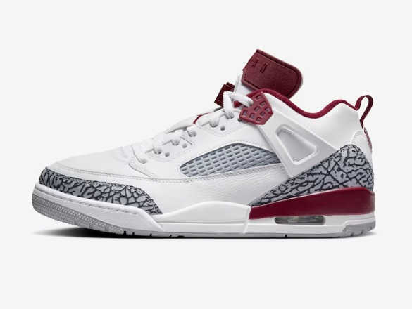
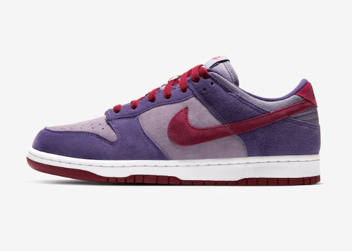

-

Dunk Low
Venner
Dando sequência ao pack “Ugly Ducklings” de 2001, o ícone do basquete dos anos 80 retorna com camurças suaves que envelhecem com uma graça alarmante. Suas cores retrô perfeitas canalizam os aros vintage de volta para as ruas, enquanto a gola baixa acolchoada e a sola dão uma ótima sensação e dão tração à sua vibração old-school. O Nike Dunk Low SP nunca foi embora.
-

Jordan Spizike Low
Team Red
O Spizike pega elementos de cinco Jordans clássicos, combina-os e dá a você um tênis icônico. É uma homenagem a Spike Lee apresentando formalmente Hollywood e o basquete em um momento cultural. Você obtém um par de tênis lindo com um pouco de história. O que mais você pode pedir? Você está cavando?
-

Dunk Low
Plum
Inspirado no bando de desajustados de 2001, o Dunk Low "Plum" retorna. Seguindo as sugestões do original, este relançamento apresenta uma mistura excêntrica de tons de "Eggplant" e "Daybreak". E como a aparência não é tudo, combinamos couro nobuck premium com aquela gola baixa acolchoada exclusiva para uma sensação elevada. Mantendo-se fiel ao seu DNA, este Dunk está enraizado na herança do basquete dos anos 80, para que você possa arrasar com um olhar para a cultura e um aceno para a história.
Grandes nomes da marca
Pessoas que usamos de inspiração

- Cristiano Ronaldo

- Vinicius JR.

- Mbappe

- Haaland